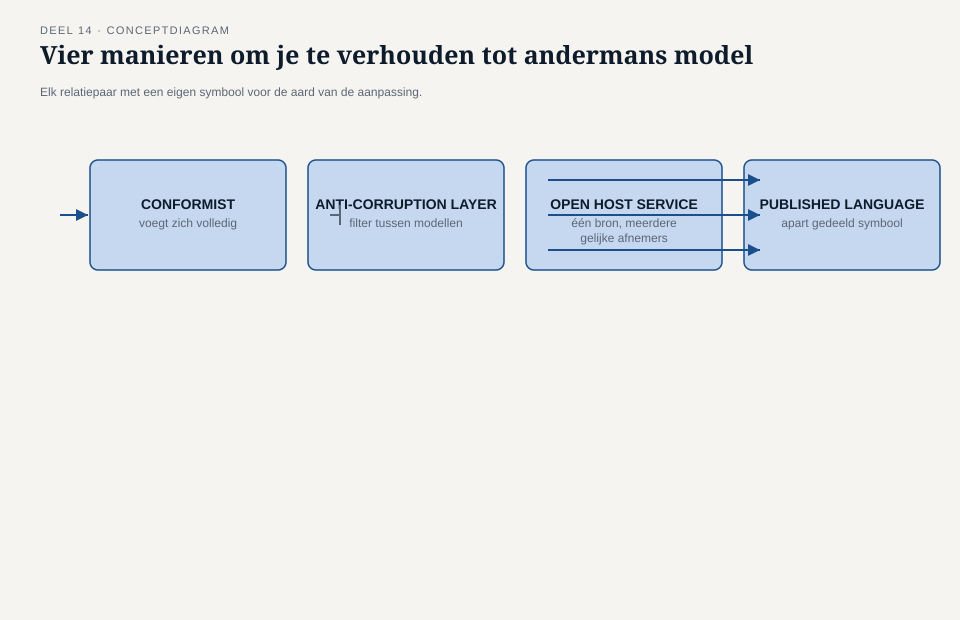
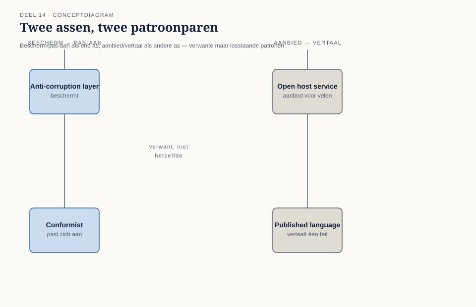
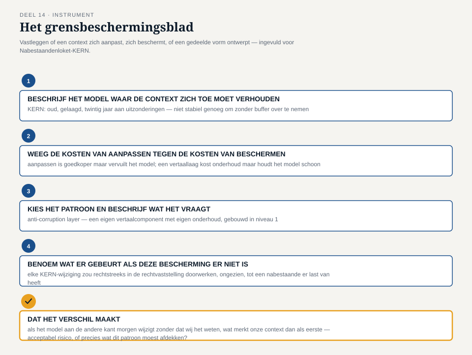

Deel 14 — Context mapping II: conformist, anti-corruption layer, open host service/published language
Slidedeck · Ductus-cursus Domain-Driven Design · niveau 2 · deel 14 van 30 · 26 slides
Slide 1 — Titel
Domain-Driven Design — deel 14 Context mapping II: conformist, anti-corruption layer, open host service/published language Niveau 2: professional · Programma Mutatieplatform
Slide 2 — Waar we vandaan komen
Deel 13: drie relaties, drie patronen van samenwerking. Foppe: “Er zijn er nog vier — en bij twee daarvan gaat het om jezelf beschermen.”
Slide 3 — Priya’s vraag
“Waarom neemt mijn team gewoon over wat KERN aanlevert, zonder dat iemand ooit heeft gevraagd of dat wel is wat wij nodig hebben?” — Priya Chandra
Slide 4 — Vera’s antwoord
“Dat klopt. En het is niet per se fout — maar het moet een keuze zijn, geen gewoonte.” — Vera Almeida
Slide 5 — Het spiegelbeeld
“Dat was geen luxe. Dat was noodzaak. KERN draagt twintig jaar aan uitzonderingen met zich mee.” — Willemijn Brugman, over Nabestaandenloket ↔ KERN
Slide 6 — Vier relaties, geen samenwerking
Wegwijzer ↔ KERN Nabestaandenloket ↔ KERN Mutatieplatform ↔ Wegwijzer Werkgeversportaal ↔ Nabestaandenloket
Slide 7 — Wat dit deel oplevert
- Conformist, anti-corruption layer
- Open host service, published language
- Twee patronenparen, tegenover elkaar
- Het grensbeschermingsblad
- De complete context map: zeven relaties
Slide 8 — Conformist
Het model van de ander ongewijzigd overnemen. Geen zwakte — een bewuste keuze, als de kosten van vertalen niet opwegen. Wordt pas een probleem als niemand het ooit heeft afgewogen.
Slide 9 — Anti-corruption layer
Een bewust gebouwde vertaallaag. Beschermt het eigen model tegen wat je niet wilt binnenlaten. Kost bouwtijd en onderhoud — de prijs voor een model dat schoon blijft.
Slide 10 — Open host service
Eén stabiel aanbod voor meerdere afnemers tegelijk. Niet: wat heeft déze afnemer nodig. Wel: wat werkt voor alle huidige én toekomstige afnemers.
Slide 11 — Published language
Een gedeelde taal voor één feit. Onafhankelijk van de interne taal van de zender. Onafhankelijk van wie het uiteindelijk leest.
Slide 12 —

Vier relatieparen, elk met een symbool voor de aard van de aanpassing
Slide 13 — Conformist tegenover anti-corruption layer
Zelfde vraag, tegengesteld antwoord. Lagere kosten, meebewegend model — of hogere kosten, een model dat onaangetast blijft. Geen van beide is in het algemeen beter.
Slide 14 — Open host service tegenover published language
Verwant, niet hetzelfde. Een aanbod zonder gedeelde taal: afnemers vertalen alsnog zelf. Een gedeelde taal zonder breed aanbod: kan op zichzelf volstaan.
Slide 15 —

Twee assen: bescherm/pas-aan, aanbied/vertaal
Slide 16 — Wanneer het averechts werkt
Conformist zonder afweging: een blinde vlek. Anti-corruption layer zonder reëel risico: onderhoud zonder nut. Open host service voor één afnemer: maatwerk met een andere naam. Published language die alleen interne taal herdoopt: geen vertaling.
Slide 17 — Karsten’s waarschuwing
“Als we gewoon opschrijven wat ons systeem intern noemt, en dat de published language noemen, hebben we niets vertaald.” — Karsten Rooijakker
Slide 18 — De werkvorm van dit deel
Het grensbeschermingsblad
Legt vast hoe een context zich verhoudt tot een model dat het niet zelf bezit.
Slide 19 — Vier stappen
- Het model waar de context zich toe moet verhouden
- Kosten van aanpassen tegen kosten van beschermen
- Patroon + wat het van de context vraagt
- Wat er gebeurt als de bescherming er niet is
Slide 20 —

Het invulblad, ingevuld voor Nabestaandenloket-KERN
Slide 21 — Veld 5: het veld dat het verschil maakt
Als het model aan de andere kant morgen wijzigt
zonder dat wij het weten —
wat merkt onze context dan als eerste?
Slide 22 — Willemijns antwoord
“Zonder de vertaallaag hadden we dat verschil rechtstreeks in onze eigen rechtvaststelling gehad, zonder dat iemand het had opgemerkt.” — Willemijn Brugman
Slide 23 — De vier relaties, ingevuld
Wegwijzer ↔ KERN — conformist Nabestaandenloket ↔ KERN — anti-corruption layer Mutatieplatform ↔ Wegwijzer — open host service Werkgeversportaal ↔ Nabestaandenloket — published language
Slide 24 — Zeven relaties, één kaart
Drie uit deel 13, vier uit dit deel. Voor het eerst gezamenlijk op tafel.
Slide 25 — Iris’ vraag
“Is dit compleet?” — Iris Tanghe
“Nee. Dit zijn de zeven relaties waar we vandaag al iets over wisten.” — Daan Kuiper
Slide 26 — Volgende keer
Deel 15 — big-picture EventStorming, twee dagdelen: het complete mutatielandschap in gebeurtenissen.